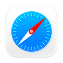
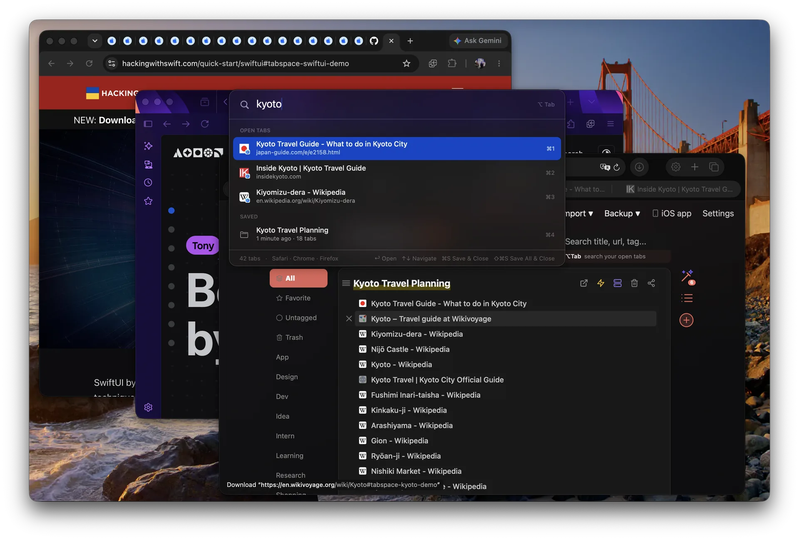
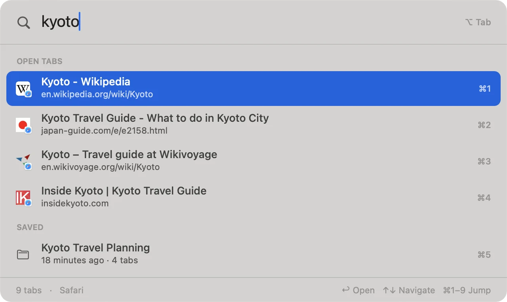

在任意界面查找
身处任何 App 都能按 Option-Tab。搜索标题、网址，或者你仍然记得的只言片语。
一个私密的 Mac 浏览器工作空间。把整个窗口保存成会话，整理多年来的研究资料，通过 iCloud 同步，再从 Safari、Chrome、Edge 和 Firefox 中直接跳到任何打开或保存过的标签页。
需要 macOS 11+ · 无需注册账号 · 会话保存在你自己的 iCloud
Tab Space 曾被收录进 Apple 编辑整理的 App Store App 清单，包括 Safari 必备 App 和新 Mac 入门指南。
标签页不是杂乱，而是尚未完成的工作。无论页面仍在浏览器里，还是几周前已经保存，Tab Space 都为这份工作保留一条最快的返回路径。
身处任何 App 都能按 Option-Tab。搜索标题、网址，或者你仍然记得的只言片语。
Tab Space 会让对应的浏览器、窗口和标签页来到前台，而不只是打开浏览器 App。
把一个窗口变成带名称的会话，关闭标签页。下次回来时，不用重新拼凑刚才的思路。
继续使用你已经选择的浏览器。Tab Space 把它们正在打开的标签页连接到 Mac 上同一个可搜索、可长期保存的会话库。

Safari
Switcher 是入口，背后则是一个 Mac 原生会话库，让你几年来的浏览器上下文依然能够找到、迁移并安全保存。
用键盘浏览结果、重新打开保存的会话，也可以不离开面板就保存并关闭当前标签页。
深入了解 Switcher →
会话把相关标签页连同标题、标签、备注和下次返回时所需的上下文完整保留下来。
会话存放在原生数据库中，并通过你自己的 iCloud 在 Mac、iPhone 和 iPad 之间同步，无需 Tab Space 账号。
按小时、天、周、月保留快照，守护整个会话库。需要时可以恢复到任何一份备份。
为会话命名、推荐标签，或按主题拆分混在一起的页面。AI 完全可选，只接收你主动选择的会话。
Tab Space 始终围绕一个耐久的想法打造：你的工作应该比浏览器窗口活得更久。多年的版本迭代与用户反馈，把它塑造成一个完整的保存、整理、同步与返回工作空间。
查看完整更新历史（英文）→他们用 Tab Space 做研究、推进项目，也把数以百计的标签页重新变成可以掌控的工作。
“软件很棒，确实做到了它所说的事。最重要的是，开发者的响应速度令人难以置信。”
“Tab Space 更灵活，添加、移除和重新排列标签页都很方便。”
“经常为研究打开大量标签页的人必备。”
“如果你有专注方面的困扰，帮自己一个忙，买下它。绝对值得。”
“它如此简单，却又非常实用。”
“它很完美，甚至还提供快捷键，让所有操作更流畅。”
“远比 Safari 自带书签更实用，而且界面设计得很漂亮。”
“开始使用这个扩展后，我的 Mac 快了很多，运行也非常流畅。”
“Safari 从未做出、却本该拥有的最佳 App。”
中文为五星评价摘录的翻译；评论者与地区信息来自 App Store Connect。
付费前先完整体验核心工作流。一次购买可拥有无限会话，Pro 则加入多浏览器与 AI 整理。
$0
免费下载
$9.99
一次购买，永久拥有
$17.99 / 年
或 $1.99/月 · 年付包含 7 天免费试用
页面展示美元价格，各地区以 App Store 实际定价为准。在 4.0 之前购买过 Tab Space 的用户会自动永久获得 Plus，无需再次付费。
配套 App 通过 iCloud 把会话库带在身边，Safari 扩展还能一步保存移动设备上所有打开的标签页。
下载 iPhone 与 iPad 版 →Mac 版支持 Safari、Chrome、Microsoft Edge 和 Firefox 121 或更新版本。多浏览器支持目前是 Pro Beta 功能；Safari 仍然属于基础 App。
会话存放在设备上的原生 App 数据库中，独立于浏览器，并通过你自己的 iCloud 同步。无需注册 Tab Space 账号；AI 只接收你主动选择处理的会话信息。
Tab Space 只会阻止继续创建新的保存会话，不会删除、隐藏或锁住已有会话，其余基础功能仍可继续使用。
任何在 4.0 版本之前购买 Mac App 的用户都会自动永久获得 Plus，无需订阅或执行任何操作；4.0 前已有的功能也会永久保留。
可以。Tab Space 支持导入已保存的标签页列表和原生归档。你自己的会话也可以随时导出为文本、Markdown、HTML 或 JSON。
可以。会话通过你的 iCloud 在 Mac、iPhone 和 iPad 之间同步。iOS 版目前仍是独立的 App Store App，会员支持会在之后的 iOS 版本中推出。
Mac App 需要 macOS 11 或更新版本。配套 App 需要 iOS 或 iPadOS 16 或更新版本。
 Firefox
Firefox